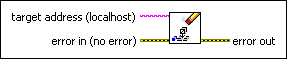
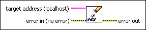

Clear Variable Forcing VI
Owning Palette: Forcing VIs
Requires: Base Development System (Real-Time, Windows)
Unforces all currently forced I/O variables and I/O aliases on the target.

 Add to the block diagram Add to the block diagram |
 Find on the palette Find on the palette |
Owning Palette: Forcing VIs
Requires: Base Development System (Real-Time, Windows)
Unforces all currently forced I/O variables and I/O aliases on the target.

| Add to the block diagram |
Find on the palette |
 |
target address specifies the IP address or DNS name of the target. |
 |
error in describes error conditions that occur before this node runs. This input provides standard error in functionality. |
 |
error out contains error information. This output provides standard error out functionality. |
This VI does not disable forcing on the target. Use the Disable Variable Forcing VI to prevent I/O variable and I/O alias forcing from taking effect on the target.
Refer to the Programmatic Forcing.lvproj in the labview\examples\Scan Engine directory for an example of using the Clear Variable Forcing VI.
 Open example Find related examples
Open example Find related examples